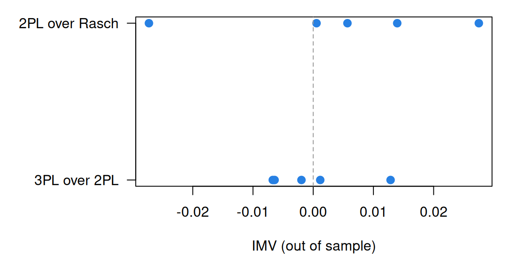

Model fit and out-of-sample prediction
What this is for
The Rasch model left open how far from 1 an outfit statistic can stray, and From the 1PL to the 4PL noted that BIC says whether one model beats another, not by how much. Most fit statistics answer yes or no, and with thousands of respondents the answer is nearly always that the model misfits. The more useful question is how much a richer model helps. We answer it by predicting responses the model never saw, and scoring those predictions with the InterModel Vigorish (IMV), a measure of predictive gain built to be compared across datasets.
Goals
By the end of this lesson you should be able to:
- compute outfit and infit and judge a misfit by its size as well as its \(z\);
- explain why likelihood-ratio tests, AIC, BIC and \(M_2\) depend on sample size, and what each is for;
- set up \(k\)-fold cross-validation over responses and explain why in-sample fit favours extra parameters;
- turn two sets of predictions into an IMV and read it against published benchmarks;
- compare the Rasch model, the 2PL and the 3PL out of sample on real data, and say why the size of a gain depends on the data as well as the model.
Core ideas
How far from 1 is too far?
The standardized residual is \(z_{ij} = (x_{ij} - p_{ij})/\sqrt{p_{ij}(1 - p_{ij})}\), with \(p_{ij}\) the model’s probability of a correct response. Outfit is the mean of \(z_{ij}^2\) over an item’s \(n\) respondents; infit weights each by \(p_{ij}(1-p_{ij})\), so respondents far from the item count for less (Wright & Masters, 1982). If the model is true, each \(z_{ij}^2\) has mean 1. How closely does outfit hover around 1? Treating each \(z^2\) as \(\chi^2_1\), with variance 2, gives the rule of thumb that its SD is about \(\sqrt{2/n}\). Wu and Adams (2013) work through how these statistics depend on sample size, and show that for dichotomous items they measure the slope of the empirical item curve relative to the model’s.
Try it: outfit when the model is true
300 simulated items at one difficulty, each answered by \(n\) respondents, with outfit computed from the true parameters. The solid line marks 1, the model’s expectation; the dashed lines mark 0.8–1.2, the range Wright and Linacre (1994) suggest for high-stakes multiple-choice items.
With 50 respondents, a fifth of the outfits fall outside 0.8–1.2 although the model is right; with 5,000, 1.08 sits several SDs out. Move the difficulty away from 0 and the spread grows (a strong respondent missing an easy item gives a huge \(z^2\)), so \(\sqrt{2/n}\) is only a rough anchor. A fixed band says little about chance in small samples, and a \(z\) says little about size in large ones. I read both: the \(z\) says whether a misfit could be chance, the size whether it is worth anyone’s time.
Does the model fit? Tests and criteria
For a whole model there are four tools. The likelihood-ratio test compares nested models: twice the difference in log likelihoods is referred to a \(\chi^2\) with the extra parameters as degrees of freedom. AIC (Akaike, 1974) and BIC (Schwarz, 1978) charge a penalty per parameter against the log likelihood and work for non-nested models too. \(M_2\) (Maydeu-Olivares & Joe, 2005, 2006) compares observed and model proportions correct for each item and each pair of items, which stays usable when most of the \(2^I\) response patterns never occur; it comes with an RMSEA, a misfit per degree of freedom.
Andersen’s test splits respondents by sum score, estimates the difficulties by conditional ML within each group, and compares with one set of difficulties for everyone, with no assumption about how \(\theta\) is distributed.
Each asks whether the data are consistent with a model (or with the smaller of two) up to sampling error. For that question the tests are the right tool, and the criteria a reasonable way to choose among models in modest samples. But sampling error shrinks as \(n\) grows while a model’s small departures from the data don’t, so with thousands of respondents every test rejects, and none says how much better the preferred model predicts.
Predict what you didn’t fit
A model with more parameters fits its own data at least as well as the model it extends, partly by fitting noise. To tell them apart, judge a model by responses it wasn’t fitted to (Yarkoni & Westfall, 2017). With item responses, hold out responses, not respondents: assign each response at random to one of \(k\) folds, fit the model to all but one fold, and predict the held-out responses from the fitted abilities and item parameters. Every respondent and item keeps most of its responses, so every held-out response can be predicted (Stenhaug & Domingue, 2022).
Try it: more parameters, better in-sample
The widget simulates one item whose true curve is a 2PL with the slope you choose, answered by respondents whose \(\theta\) we know (as Elo was known in The likelihood and logistic regression). It fits seven models for that item, labelled by how many parameters they have: 1, one probability for everyone (the item’s proportion correct); 2, a logistic curve in \(\theta\), the true form; 3 to 7, a logistic curve whose exponent is a polynomial in \(\theta\), so the curve can bend and wiggle. Each is fitted to the training respondents only. The upper plot scores each by mean log likelihood per response (closer to 0 is better; −0.69 is a coin flip) on the training respondents (in-sample) and on 5,000 new ones (out-of-sample). The lower plot shows the training responses and the curves from the 2- and 7-parameter models.
What should you have seen? The in-sample line only rises: each added parameter lets the curve bend toward the training responses, noise included. The out-of-sample line rises from 1 parameter to 2, because the item really does depend on \(\theta\), and then flattens or falls. With 30 or 100 training respondents the 7-parameter curve in the lower plot wiggles to follow a few responses, and the wiggles are wrong for new respondents; with 1,000 the extra terms stay near zero and both lines are flat after 2 parameters. The gap between the lines is in-sample advantage that doesn’t carry over. Held-out responses measure what does; the next section puts it on a scale comparable across tests.
The IMV: how much better, on a portable scale
Held-out log likelihoods say which model predicts better, but their size depends on how predictable the responses were anyway. The InterModel Vigorish (Domingue et al., 2025; for item response models, Domingue et al., 2024) puts predictive gains on a common scale in three steps.
- A coin for each set of predictions. From a model’s mean log likelihood on held-out responses, \(\bar\ell\), find the weight \(w \ge 0.5\) of a coin with the same expected log likelihood per toss: \(w\log w + (1-w)\log(1-w) = \bar\ell\). Guessing gives \(w = 0.5\); confident, correct predictions give \(w\) near 1.
- A bet. You are offered fair odds on heads for the baseline’s coin, \(w_0\), but the coin is really the better model’s, \(w_1\).
- The expected return per unit staked is the IMV, \[\text{IMV} = \frac{w_1 - w_0}{w_0}.\]
Try it: two predictions, two coins
The worked example of Domingue et al. (2025, §2.3.1): 20 tosses of a fair coin (14 heads), then 20 of a coin with weight 0.95 (19 heads). The baseline predicts one probability for every toss; the enhanced prediction can treat the halves differently.
With the paper’s values the coins are 0.67 and 0.83 and the IMV is 0.24, as in the paper. Push the second enhanced prediction to 0.99 and the IMV falls: the one tail in those 20 tosses is now punished hard. Set both enhanced values to the baseline’s and the IMV is 0.
The IMV always compares two sets of predictions (for an absolute statement, use a simple baseline such as item proportions). In-sample it favours the more complex model, so it is computed on held-out responses (Domingue et al., 2024, §2.1). As an expected return on a fair bet, it compares across datasets, which makes it a reasonable choice whenever the question is how much. Benchmarks from simulations with 50 items and 1,000 respondents (Domingue et al., 2024, Table 1): 0.1 for the Rasch model over item proportions, 0.01 for the 2PL over the Rasch model when slopes vary substantially (log slopes with SD 0.5), and 0.0005 for the 3PL over the 2PL even when a 3PL generated the data.
Misspecification you can’t see
Every model here assumes a logistic curve. What if responses follow another: the normal ogive, a heavy-tailed curve, or an asymmetric one such as the skewed curves of Bazán, Bolfarine and Branco (2006)? How far is the closest logistic curve from the true one, where the respondents are?
Try it: other curves, the closest logistic
The normal ogive is matched almost exactly (slope near 1.7); the others leave gaps of a few hundredths where respondents are, about the sampling error of a proportion from 200 respondents. Slope and location absorb most of the misspecification, and residual-based fit statistics see only what is left over.
Simulate
The code below simulates Rasch data for 20 items at three sample sizes, fits the Rasch model with mirt (Chalmers, 2012), and summarizes the outfits, computed from mirt’s default (EAP) abilities and from maximum-likelihood ones. Then it generates data from the normal ogive and fits the logistic Rasch model anyway. The first run takes 20–30 seconds while R and mirt load, and the fits a minute or so more.
With the seed as written, the maximum-likelihood outfits average 0.97 to 0.99, with SDs of 0.114 at 100 respondents and 0.043 at 1,600 (against 0.141 and 0.035 from \(\sqrt{2/n}\)). The EAP outfits average 0.90 at every sample size, although the model is true. EAP pulls abilities toward the mean, so the residuals come out smaller than the model expects. Outfit assumes each ability comes from the respondent’s own responses; with 20 items and EAP abilities, “near 1” means near 0.9. In the probit part, the estimated difficulties are 1.7 times the true ones (the constant \(D\) again), while the outfits run from 0.72 to about 1.1 and no \(|z|\) exceeds 1.9: the fit statistics don’t notice that the curve has the wrong shape.
Download this code to run it in your own R session.
With real data
Our main example is gilbert_meta_2, a 20-item reading comprehension test taken by 2,174 students in a randomized trial of a content literacy intervention that ran from first to second grade (Kim et al., 2023). Its job is to be a mid-sized test on which every fit statistic can be compared. A response is 1 when correct; every student answered every item, and there are no waves. Download the code; the cross-validation takes a few minutes.
Code
library(mirt)
# Each IRW table has a landing page (itemresponsewarehouse.org/tables/<name>/) with
# a CSV download. This link is pinned to one version of the data.
gm2_url <- "https://redivis.com/api/v1/tables/datapages.item_response_warehouse:v59_0.gilbert_meta_2/rows?format=csv"
df2 <- read.csv(gm2_url)
# resp is 1 for a correct answer. One response per student per item; no waves.
c(responses = nrow(df2), students = length(unique(df2$id)), items = length(unique(df2$item)),
missing = sum(is.na(df2$resp)))responses students items missing
43480 2174 20 0 Code
# IRW tables are long (one row per response); mirt wants wide (one row per respondent).
long2wide <- function(df) {
wide <- tapply(df$resp, list(df$id, df$item), function(x) x[1])
ord <- order(as.numeric(gsub("\\D", "", colnames(wide))), colnames(wide))
as.data.frame(wide[, ord])
}
resp2 <- long2wide(df2)
names(resp2) <- paste0("item", names(resp2))
round(range(colMeans(resp2)), 2) # proportion correct: hardest and easiest items[1] 0.31 0.83Item fit, read by size
Code
set.seed(252)
rasch2 <- mirt(resp2, 1, itemtype = "Rasch", verbose = FALSE)
fit2 <- itemfit(rasch2, fit_stats = "infit") # outfit and infit, with z statistics
# How much would outfit vary if the Rasch model were true? For one response,
# z^2 = (x - p)^2 / (p(1 - p)) has variance 1/(p(1 - p)) - 4 (see the Go deeper
# callout), so an item's outfit, the mean of n of them, has the SD below. We plug in
# the fitted model's probabilities. sqrt(2/n) is the familiar rough version.
theta <- fscores(rasch2)[, 1]
b <- -coef(rasch2, simplify = TRUE)$items[, "d"] # mirt's d is an easiness: b = -d
P <- plogis(outer(theta, b, "-"))
null_sd <- sqrt(colSums(1 / (P * (1 - P)) - 4)) / nrow(resp2)
# itemfit() computes residuals from EAP abilities by default; method = "ML" uses each
# respondent's maximum-likelihood ability instead (the 20 students with 0 or 20
# correct have none and drop out).
fit2_ml <- itemfit(rasch2, fit_stats = "infit", method = "ML")
out <- data.frame(item = fit2$item, p = round(colMeans(resp2), 2), outfit = round(fit2$outfit, 2),
z = round(fit2$z.outfit, 1), null_sd = round(null_sd, 3),
outfit_ML = round(fit2_ml$outfit, 2), z_ML = round(fit2_ml$z.outfit, 1))
out[order(out$outfit), ]| item | p | outfit | z | null_sd | outfit_ML | z_ML | |
|---|---|---|---|---|---|---|---|
| item15 | item15 | 0.72 | 0.68 | -9.9 | 0.036 | 0.65 | -8.6 |
| item8 | item8 | 0.67 | 0.71 | -11.1 | 0.029 | 0.69 | -8.9 |
| item1 | item1 | 0.83 | 0.79 | -3.9 | 0.057 | 0.78 | -3.4 |
| item16 | item16 | 0.61 | 0.79 | -9.7 | 0.023 | 0.80 | -6.5 |
| item18 | item18 | 0.59 | 0.80 | -9.4 | 0.022 | 0.83 | -5.4 |
| item20 | item20 | 0.67 | 0.81 | -7.1 | 0.029 | 0.83 | -4.7 |
| item7 | item7 | 0.61 | 0.87 | -5.9 | 0.024 | 0.91 | -2.6 |
| item13 | item13 | 0.49 | 0.87 | -6.9 | 0.019 | 0.92 | -2.6 |
| item19 | item19 | 0.55 | 0.88 | -6.0 | 0.020 | 0.94 | -2.1 |
| item14 | item14 | 0.46 | 0.91 | -4.6 | 0.020 | 0.99 | -0.4 |
| item10 | item10 | 0.50 | 0.93 | -3.7 | 0.019 | 1.01 | 0.5 |
| item12 | item12 | 0.48 | 0.94 | -3.1 | 0.020 | 1.04 | 1.2 |
| item4 | item4 | 0.38 | 0.96 | -1.7 | 0.025 | 1.06 | 1.7 |
| item9 | item9 | 0.53 | 0.96 | -1.9 | 0.020 | 1.06 | 2.1 |
| item11 | item11 | 0.54 | 0.98 | -1.0 | 0.020 | 1.11 | 3.4 |
| item17 | item17 | 0.60 | 0.99 | -0.5 | 0.023 | 1.15 | 4.3 |
| item3 | item3 | 0.51 | 1.00 | 0.2 | 0.019 | 1.13 | 4.3 |
| item5 | item5 | 0.31 | 1.02 | 0.8 | 0.032 | 1.16 | 3.5 |
| item6 | item6 | 0.62 | 1.03 | 1.4 | 0.025 | 1.21 | 5.6 |
| item2 | item2 | 0.32 | 1.08 | 2.7 | 0.030 | 1.25 | 5.9 |
Code
round(c(rough_null_sd = sqrt(2 / nrow(resp2)), observed_sd_of_outfit = sd(fit2$outfit),
median_outfit = median(fit2$outfit), median_outfit_ML = median(fit2_ml$outfit)), 3) rough_null_sd observed_sd_of_outfit median_outfit
0.030 0.110 0.920
median_outfit_ML
1.001 Code
# How many items misfit by z, and how many sit inside 0.8-1.2?
c(below_1 = sum(fit2$outfit < 1), abs_z_over_2 = sum(abs(fit2$z.outfit) > 2),
inside_0.8_1.2 = sum(fit2$outfit >= 0.8 & fit2$outfit <= 1.2),
inside_0.8_1.2_ML = sum(fit2_ml$outfit >= 0.8 & fit2_ml$outfit <= 1.2)) below_1 abs_z_over_2 inside_0.8_1.2 inside_0.8_1.2_ML
16 13 16 14 From mirt’s defaults, outfit runs from 0.68 (item 15) to 1.08 (item 2), and 16 of the 20 items are below 1. The model-based null SDs run from 0.019 to 0.057, near \(\sqrt{2/2174} = 0.03\), while the outfits have an SD of 0.11, and 13 items have \(|z| > 2\). Two things temper that. With maximum-likelihood abilities (outfit_ML) the median is 1.00, not 0.92: part of the overfit is EAP shrinkage. And by size most departures are modest: 16 default outfits, and 14 maximum-likelihood ones, sit inside 0.8–1.2. What stands out is items 15 and 8 at one end and item 2, at 1.25 with maximum-likelihood abilities, at the other.
Code
twopl2 <- mirt(resp2, 1, itemtype = "2PL", verbose = FALSE)
a2 <- coef(twopl2, simplify = TRUE)$items[, "a1"]
# The three most overfitting items, and the range of 2PL slopes
round(a2[order(fit2$outfit)[1:3]], 2)item15 item8 item16
2.40 2.10 1.59 Code
round(range(a2), 2)[1] 0.47 2.40Code
round(cor(a2, fit2$outfit, method = "spearman"), 2) # slope against outfit[1] -0.98The three most overfitting items are the three steepest in a 2PL (slopes 2.40, 2.10 and 1.59), and across all 20 items the rank correlation of slope and outfit is −0.98. That is Wu and Adams’ result in data: for dichotomous items, outfit reads an item’s slope against the common one.
Global fit
Code
threepl2 <- mirt(resp2, 1, itemtype = "3PL", verbose = FALSE)
# Likelihood-ratio tests, AIC and BIC for nested models (smaller AIC/BIC is better).
anova(rasch2, twopl2)| AIC | SABIC | HQ | BIC | logLik | X2 | df | p | |
|---|---|---|---|---|---|---|---|---|
| rasch2 | 53233.95 | 53286.60 | 53277.59 | 53353.32 | -26595.97 | NA | NA | NA |
| twopl2 | 52604.69 | 52704.98 | 52687.83 | 52832.06 | -26262.35 | 667.2579 | 19 | 0 |
Code
anova(twopl2, threepl2)| AIC | SABIC | HQ | BIC | logLik | X2 | df | p | |
|---|---|---|---|---|---|---|---|---|
| twopl2 | 52604.69 | 52704.98 | 52687.83 | 52832.06 | -26262.35 | NA | NA | NA |
| threepl2 | 52520.29 | 52670.72 | 52644.99 | 52861.34 | -26200.14 | 124.4057 | 20 | 0 |
Code
c(threepl_converged = extract.mirt(threepl2, "converged"))threepl_converged
FALSE Code
# Limited-information fit of the whole model: M2 and its RMSEA.
rbind(Rasch = M2(rasch2), `2PL` = M2(twopl2))[, c("M2", "df", "p", "RMSEA")]| M2 | df | p | RMSEA | |
|---|---|---|---|---|
| Rasch | 1383.602 | 189 | 0 | 0.0539325 |
| 2PL | 691.951 | 170 | 0 | 0.0375890 |
Every test rejects: the 2PL improves on the Rasch model by 667 on 19 degrees of freedom, the 3PL on the 2PL by 124 on 20, and \(M_2\) rejects both the Rasch model and the 2PL (RMSEAs 0.054 and 0.038). AIC prefers the 3PL (52,520 against 52,605), BIC the 2PL (52,832 against 52,861), and the 3PL hadn’t converged when EM stopped at 500 cycles.
Code
# Andersen's (1973) likelihood-ratio test, from conditional maximum likelihood.
# esf() gives the elementary symmetric functions gamma_0, ..., gamma_I of the item
# easinesses exp(-b); cml() maximizes the conditional likelihood of the patterns
# given the sum scores (difficulties sum to 0), dropping sum scores of 0 and I,
# which carry no information about the items.
esf <- function(eps) {
g <- 1
for (e in eps) g <- c(g, 0) + c(0, g) * e
g
}
cml <- function(X) {
X <- as.matrix(X); I <- ncol(X); r <- rowSums(X)
X <- X[r > 0 & r < I, , drop = FALSE]; r <- rowSums(X)
s <- colSums(X); n_r <- tabulate(r, I - 1)
negll <- function(par) {
b <- c(par, -sum(par))
sum(s * b) + sum(n_r * log(esf(exp(-b))[2:I]))
}
o <- optim(rep(0, I - 1), negll, method = "BFGS", control = list(maxit = 1000, reltol = 1e-12))
list(b = c(o$par, -sum(o$par)), loglik = -o$value, n = nrow(X))
}
# Split respondents at the median sum score, estimate the difficulties separately in
# each half, and compare with one set of difficulties for everyone.
r2 <- rowSums(resp2)
high <- r2 > median(r2)
full <- cml(resp2); lo <- cml(resp2[!high, ]); hi <- cml(resp2[high, ])
LR <- 2 * (lo$loglik + hi$loglik - full$loglik)
df_LR <- ncol(resp2) - 1
c(LR = round(LR, 1), df = df_LR, p = signif(pchisq(LR, df_LR, lower.tail = FALSE), 2)) LR df p
4.593e+02 1.900e+01 1.800e-85 Code
# Difficulty among high scorers minus difficulty among low scorers, by item
round(sort(setNames(hi$b - lo$b, names(resp2))), 2)item15 item8 item20 item16 item18 item1 item7 item13 item19 item14 item10
-1.25 -1.24 -0.53 -0.47 -0.47 -0.41 -0.10 -0.07 0.05 0.11 0.17
item12 item4 item17 item9 item5 item11 item6 item3 item2
0.27 0.30 0.44 0.46 0.46 0.46 0.56 0.59 0.66 Andersen’s test gives 459 on 19 degrees of freedom. Relative to the other items, items 15 and 8 are about 1.25 logits easier among students above the median sum score than below it, and item 2 is 0.66 harder: a steep item looks easy to the strong and hard to the weak. These are the overfitting items again. The tests agree that the Rasch model misfits; they leave open how much the 2PL, or the 3PL, helps.
Out of sample
Code
# The IMV (Domingue et al., 2024, 2025). coin() turns a mean log likelihood into the
# weight w >= 0.5 of a coin with the same expected log likelihood per toss;
# imv() is the expected return, (w1 - w0) / w0, on a bet placed with the better coin.
coin <- function(ll) {
if (ll <= log(0.5)) return(0.5)
uniroot(function(w) w * log(w) + (1 - w) * log(1 - w) - ll, c(0.5, 1 - 1e-12), tol = 1e-12)$root
}
mean_ll <- function(y, p) mean(y * log(p) + (1 - y) * log(1 - p))
imv <- function(y, p0, p1) {
w0 <- coin(mean_ll(y, p0)); w1 <- coin(mean_ll(y, p1))
(w1 - w0) / w0
}
# Predicted probabilities for the cells cells[, 1:2] (row, column) from a fitted model:
# mirt's form g + (u - g) * logistic(a * theta + d), with EAP abilities.
predict_cells <- function(m, cells) {
th <- fscores(m)[, 1]
# A respondent whose every response was held out has no ability estimate; the
# prior mean, 0, is what EAP gives with no data.
th[is.na(th)] <- 0
cf <- coef(m, simplify = TRUE)$items
i <- cells[, 2]
cf[i, "g"] + (cf[i, "u"] - cf[i, "g"]) * plogis(cf[i, "a1"] * th[cells[, 1]] + cf[i, "d"])
}
# k-fold cross-validation over responses: each response goes into one of k folds.
# For each fold, blank out its responses, fit every model to the rest, and predict
# the blanked-out responses. Each respondent and item keeps most of its responses,
# so every held-out response has an ability and an item to be predicted from.
cv_predict <- function(resp, models, k = 5, seed = 1) {
set.seed(seed)
X <- as.matrix(resp)
cells <- which(!is.na(X), arr.ind = TRUE)
fold <- sample(rep(1:k, length.out = nrow(cells)))
do.call(rbind, lapply(1:k, function(f) {
test <- cells[fold == f, , drop = FALSE]
train <- X; train[test] <- NA
preds <- sapply(models, function(m)
predict_cells(mirt(as.data.frame(train), 1, itemtype = m, verbose = FALSE), test))
data.frame(fold = f, item = test[, 2], y = X[test],
p_value = colMeans(train, na.rm = TRUE)[test[, 2]], preds, check.names = FALSE)
}))
}
# The IMV of each model over the one before it, fold by fold, then averaged.
imv_table <- function(pred, models) {
base <- c("p_value", models)
res <- sapply(split(pred, pred$fold), function(d)
sapply(2:length(base), function(j) imv(d$y, d[[base[j - 1]]], d[[base[j]]])))
res <- matrix(res, nrow = length(base) - 1)
data.frame(comparison = paste(base[-length(base)], "->", base[-1]), IMV = round(rowMeans(res), 4))
}Code
models <- c("Rasch", "2PL", "3PL")
pred2 <- cv_predict(resp2, models)
imv_table(pred2, models)| comparison | IMV |
|---|---|
| p_value -> Rasch | 0.1249 |
| Rasch -> 2PL | 0.0124 |
| 2PL -> 3PL | 0.0001 |
Code
# The RMSE of the same predictions barely moves:
round(sapply(pred2[, models], function(p) sqrt(mean((pred2$y - p)^2))), 3)Rasch 2PL 3PL
0.454 0.451 0.451 Out of sample, the Rasch model’s IMV over item proportions is 0.125, a little above the 0.1 benchmark; the 2PL’s over the Rasch model is 0.012, near the 0.01 benchmark for substantial slope variation; the 3PL’s over the 2PL is 0.0001. The RMSE moves from 0.454 to 0.451, a change with no obvious scale; the IMV says the 2PL’s gain is about a tenth of the gain from modelling abilities at all.
Code
# The same comparisons in-sample: predict the responses the models were fitted to.
cells <- which(!is.na(as.matrix(resp2)), arr.ind = TRUE)
ins <- data.frame(fold = 1, item = cells[, 2], y = as.matrix(resp2)[cells],
p_value = colMeans(resp2)[cells[, 2]],
Rasch = predict_cells(rasch2, cells), `2PL` = predict_cells(twopl2, cells),
`3PL` = predict_cells(threepl2, cells), check.names = FALSE)
imv_table(ins, models)| comparison | IMV |
|---|---|
| p_value -> Rasch | 0.1898 |
| Rasch -> 2PL | 0.0135 |
| 2PL -> 3PL | 0.0035 |
In-sample, the 3PL’s IMV over the 2PL is 0.0035, dozens of times its out-of-sample value, while the 2PL’s barely changes (0.0135). The 3PL’s in-sample gain is mostly its extra parameters fitting their own responses.
A second test
For contrast, gilbert_meta_14 is a mathematics test from the evaluation of Partnership Schools for Liberia (Romero, Sandefur & Sandholtz, 2020). Its job is to show that the size of a predictive gain depends on the data as well as the model. Its two waves share item codes but not always items (IRW item-text check), so we keep the baseline. A response is 1 when correct.
Code
gm14_url <- "https://redivis.com/api/v1/tables/datapages.item_response_warehouse:v59_0.gilbert_meta_14/rows?format=csv"
df14 <- read.csv(gm14_url)
# Two waves: 0 is the baseline test, 1 a later one, with partly different items
# under shared codes. We keep the baseline only.
table(wave = df14$wave)wave
0 1
237315 154440 Code
df14 <- df14[df14$wave == 0, ]
resp14 <- long2wide(df14)
c(students = nrow(resp14), items = ncol(resp14), missing = sum(is.na(resp14)))students items missing
3651 65 0 Code
p14 <- colMeans(resp14)
round(range(p14), 3)[1] 0.007 0.909Code
c(items_below_0.1 = sum(p14 < 0.1), items_between_0.2_and_0.8 = sum(p14 > 0.2 & p14 < 0.8)) items_below_0.1 items_between_0.2_and_0.8
21 31 The baseline has 3,651 students and 65 items, all answered, from 0.7% to 91% correct; 21 items are answered correctly by fewer than one student in ten.
Code
twopl14 <- mirt(resp14, 1, itemtype = "2PL", verbose = FALSE)
a14 <- coef(twopl14, simplify = TRUE)$items[, "a1"]
round(range(a14), 2)[1] 0.39 6.43Code
round(c(sd_log_a_gm14 = sd(log(a14)), sd_log_a_gm2 = sd(log(a2))), 2)sd_log_a_gm14 sd_log_a_gm2
0.61 0.44 Code
models14 <- c("Rasch", "2PL")
pred14 <- cv_predict(resp14, models14)
imv_table(pred14, models14)| comparison | IMV |
|---|---|
| p_value -> Rasch | 0.0821 |
| Rasch -> 2PL | 0.0088 |
Code
# Where is there anything left to predict? The IMV of the 2PL over the Rasch model
# among held-out responses to items most students miss, and to the rest.
hard <- p14[pred14$item] < 0.1
round(c(items_below_0.1 = imv(pred14$y[hard], pred14$Rasch[hard], pred14$`2PL`[hard]),
other_items = imv(pred14$y[!hard], pred14$Rasch[!hard], pred14$`2PL`[!hard])), 4)items_below_0.1 other_items
0.0015 0.0154 The 2PL’s IMV is 0.0088, smaller than in gilbert_meta_2 despite the wider slopes: 0.0015 on items with fewer than 10% correct, 0.0154 on the rest. So “for which test does the 2PL help more?” depends on which responses we ask about. The IMV puts both gains on one scale, but no scale makes a test’s items less extreme.
So which model would I fit to a test like gilbert_meta_2? The 2PL. The tests said the Rasch model misfits, which at this sample size they would say of almost any test. What decides it for me is that the 2PL’s out-of-sample gain, 0.012, is the size the benchmarks associate with substantial slope variation, while the 3PL’s shrank to almost nothing on new responses. I’d spend a parameter per item for a gain of 0.01; I wouldn’t for 0.0001.
Problems
- Where \(\sqrt{2/n}\) comes from. Show that \(E(z^2) = 1\) and \(\text{Var}(z^2) = 1/(pq) - 4\) for one Bernoulli response. For \(\theta \sim N(0,1)\), at what difficulty does \(\text{Var}(z^2)\) average 2? Why is \(\sqrt{2/n}\) a rough rule rather than a result?
- Does the architecture of difficulties matter? With 40 items and 1,000 respondents, compare the SD of outfit (maximum-likelihood abilities) for difficulties drawn from a standard normal, a uniform on \([-3, 3]\), and a bimodal distribution (half near ±1.5). Does the Go deeper formula predict what you see? (PS3#3; open in EDUC 252.)
- Two tables, one comparison. Rerun the cross-validation for both tables with \(k = 4\) and \(k = 10\) and three seeds. How much do the IMVs move? For which table does the 2PL help more, and what makes the question hard? (PS4#2.)
- Perfect predictions. Simulate Rasch data with 2,000 respondents and 20 items and compute the RMSE between the responses and the true probabilities. Compare it with the Rasch model’s 0.454 on
gilbert_meta_2. Why is it so far from 0? (PS4#2a.) - Keep or drop? Item 2 in
gilbert_meta_2has outfit 1.08 and \(z = 2.7\) frommirt’s defaults, and 1.25 with maximum-likelihood abilities. Would you drop it? What would you check first, and what would change your mind? - Challenge: why the logistic? Generate data from the complementary log-log, a Cauchy and a skewed curve, fit the Rasch model and the 2PL, and describe what goes wrong: difficulties, slopes, fit statistics, and the IMV of the true probabilities over the fitted ones on new data. Can any fit statistic detect the wrong curve at 1,000 respondents? At 20,000? (PS3#4; open. I don’t know of a general answer.)
Across the IRW
Does the 2PL, or the 3PL, help out of sample across the warehouse? For the dichotomous tables of Across the IRW in From the 1PL to the 4PL, compute.R runs this lesson’s five-fold cross-validation (at most 2,000 respondents per table) and records the same three IMVs. Domingue et al. (2024, §4) did this for 89 IRW datasets, with four folds and priors on the slopes and lower asymptotes, and found averages of 0.075, 0.006 and 0.00016.
Code
dd_path <- file.path("..", "deepdives", "fit-prediction", "results.rds")
dd <- if (file.exists(dd_path)) readRDS(dd_path) else NULL
if (!is.null(dd)) {
s <- dd$summary[order(dd$summary$imv_2pl), ]
print(data.frame(table = s$table, items = s$n_items, respondents = s$n_resp,
mean_p = round(s$mean_p, 2), IMV_Rasch = round(s$imv_rasch, 4),
IMV_2PL = round(s$imv_2pl, 4), IMV_3PL = round(s$imv_3pl, 4)), row.names = FALSE)
op <- par(mar = c(4, 8, 1, 1))
stripchart(list(`3PL over 2PL` = s$imv_3pl, `2PL over Rasch` = s$imv_2pl), pch = 19, cex = 1.2,
col = "#2780e3", las = 1, xlab = "IMV (out of sample)")
abline(v = 0, lty = 2, col = "#999")
par(op)
} table items respondents mean_p IMV_Rasch IMV_2PL
chuemchit_2024_nonpartner_violence 5 494 0.06 0.0017 -0.0273
taylorabdulai_2025_info_source 12 377 0.66 0.3117 0.0006
chess_lnirt 40 256 0.47 0.0539 0.0057
gilbert_meta_2 20 2000 0.55 0.1281 0.0140
peters_2025_si_intention 5 2000 0.33 0.0345 0.0275
IMV_3PL
0.0128
-0.0064
-0.0020
0.0012
-0.0067
Run on 24 September 2026: 5 tables fitted, 0 failed. The 2PL’s IMV over the Rasch model has median 0.0057 (range -0.0273 to 0.0275); the 3PL’s over the 2PL, median -0.0020 (range -0.0067 to 0.0128).
The pilot checks the pipeline: gilbert_meta_2 lands near this lesson’s values. On five-item tables, a 2PL or 3PL fitted without priors can lose a few hundredths to estimation noise. The full run will say how often the 2PL helps and, read against the slope spreads in From the 1PL to the 4PL, whether slope variation predicts the gain. The IRW’s 2PL discrimination vignette looks at the slopes themselves.
Going further
- Domingue, B. W., Kanopka, K., Kapoor, R., Pohl, S., Chalmers, R. P., Rahal, C., & Rhemtulla, M. (2024). The InterModel Vigorish as a lens for understanding (and quantifying) the value of item response models for dichotomously coded items. Psychometrika, 89(3), 1034–1054. https://doi.org/10.1007/s11336-024-09977-2. The IMV for item response models: benchmarks from simulation, and in §4, 89 IRW datasets.
- Domingue, B. W., Rahal, C., Faul, J., Freese, J., Kanopka, K., Rigos, A., Stenhaug, B., & Tripathi, A. S. (2025). The InterModel Vigorish (IMV) as a flexible and portable approach for quantifying predictive accuracy with binary outcomes. PLOS ONE, 20(3), e0316491. https://doi.org/10.1371/journal.pone.0316491. The IMV in general, with benchmarks from health, politics and the Titanic.
- Stenhaug, B. A., & Domingue, B. W. (2022). Predictive fit metrics for item response models. Applied Psychological Measurement, 46(2), 136–155. https://doi.org/10.1177/01466216211066603. Cross-validation over responses, and why the most predictive model needn’t be the one that generated the data.
- Yarkoni, T., & Westfall, J. (2017). Choosing prediction over explanation in psychology: Lessons from machine learning. Perspectives on Psychological Science, 12(6), 1100–1122. https://doi.org/10.1177/1745691617693393. The case for judging models by what they predict.
- Wu, M., & Adams, R. J. (2013). Properties of Rasch residual fit statistics. Journal of Applied Measurement, 14(4), 339–355. https://pubmed.ncbi.nlm.nih.gov/24064576/. How outfit and infit behave, and what they measure.
- Wright, B. D., & Linacre, J. M. (1994). Reasonable mean-square fit values. Rasch Measurement Transactions, 8(3), 370. https://www.rasch.org/rmt/rmt83b.htm. Size-based ranges for mean-square fit, by kind of test.
- Wright, B. D., & Masters, G. N. (1982). Rating scale analysis. MESA Press. https://www.rasch.org/rsa.htm. Infit and outfit at their source.
- Andersen, E. B. (1973). A goodness of fit test for the Rasch model. Psychometrika, 38(1), 123–140. https://doi.org/10.1007/BF02291180. The conditional likelihood-ratio test.
- Maydeu-Olivares, A., & Joe, H. (2005). Limited- and full-information estimation and goodness-of-fit testing in \(2^n\) contingency tables: A unified framework. Journal of the American Statistical Association, 100(471), 1009–1020. https://doi.org/10.1198/016214504000002069. Where \(M_2\) comes from.
- Maydeu-Olivares, A., & Joe, H. (2006). Limited information goodness-of-fit testing in multidimensional contingency tables. Psychometrika, 71(4), 713–732. https://doi.org/10.1007/s11336-005-1295-9. \(M_2\) for multidimensional tables.
- Stone, C. A., & Zhang, B. (2003). Assessing goodness of fit of item response theory models: A comparison of traditional and alternative procedures. Journal of Educational Measurement, 40(4), 331–352. https://doi.org/10.1111/j.1745-3984.2003.tb01150.x. Item fit procedures side by side.
- Akaike, H. (1974). A new look at the statistical model identification. IEEE Transactions on Automatic Control, 19(6), 716–723. https://doi.org/10.1109/TAC.1974.1100705. The AIC.
- Schwarz, G. (1978). Estimating the dimension of a model. The Annals of Statistics, 6(2), 461–464. https://doi.org/10.1214/aos/1176344136. The BIC.
- Gneiting, T., & Raftery, A. E. (2007). Strictly proper scoring rules, prediction, and estimation. Journal of the American Statistical Association, 102(477), 359–378. https://doi.org/10.1198/016214506000001437. Why the log likelihood is a fair way to score probabilities.
- Camilli, G. (1994). Origin of the scaling constant d = 1.7 in item response theory. Journal of Educational and Behavioral Statistics, 19(3), 293–295. https://doi.org/10.3102/10769986019003293. The logistic and the normal ogive.
- Bazán, J. L., Bolfarine, H., & Branco, M. D. (2006). A skew item response model. Bayesian Analysis, 1(4). https://doi.org/10.1214/06-BA128. An asymmetric alternative to the logistic curve.
- Chalmers, R. P. (2012). mirt: A multidimensional item response theory package for the R environment. Journal of Statistical Software, 48(6). https://doi.org/10.18637/jss.v048.i06. The package, including
itemfit()andM2(). - Kim, J. S., Burkhauser, M. A., Relyea, J. E., Gilbert, J. B., Scherer, E., Fitzgerald, J., Mosher, D., & McIntyre, J. (2023). A longitudinal randomized trial of a sustained content literacy intervention from first to second grade: Transfer effects on students’ reading comprehension. Journal of Educational Psychology, 115(1), 73–98. https://doi.org/10.1037/edu0000751. The study behind
gilbert_meta_2. - Romero, M., Sandefur, J., & Sandholtz, W. A. (2020). Outsourcing education: Experimental evidence from Liberia. American Economic Review, 110(2), 364–400. https://doi.org/10.1257/aer.20181478. The study behind
gilbert_meta_14. - From the IRW: the 2PL discrimination vignette (slopes across the warehouse’s cognitive tables).
- Glas, C. A. W. (2017). Frequentist model-fit tests. In W. J. van der Linden (Ed.), Handbook of item response theory: Vol. 2. Statistical tools (pp. 343–362). Chapman and Hall/CRC. https://doi.org/10.1201/b19166-17. A handbook chapter on frequentist tests of model fit.
- Cohen, A. S., & Cho, S.-J. (2017). Information criteria. In W. J. van der Linden (Ed.), Handbook of item response theory: Vol. 2. Statistical tools (pp. 363–378). Chapman and Hall/CRC. https://doi.org/10.1201/b19166-18. A handbook chapter on information criteria, such as the AIC and BIC, for item response models.
- Wells, C. S., & Hambleton, R. K. (2017). Model fit with residual analyses. In W. J. van der Linden (Ed.), Handbook of item response theory: Vol. 2. Statistical tools (pp. 395–414). Chapman and Hall/CRC. https://doi.org/10.1201/b19166-20. A handbook chapter on assessing model fit with residuals.
Data sources
Data from the Item Response Warehouse (each table name links to its IRW page); references from IRW biblio.
gilbert_meta_2: Kim, J. S., Burkhauser, M. A., Relyea, J. E., Gilbert, J. B., Scherer, E., Fitzgerald, J., … & McIntyre, J. (2023). A longitudinal randomized trial of a sustained content literacy intervention from first to second grade: Transfer effects on students’ reading comprehension. Journal of Educational Psychology, 115(1), 73. James S. Kim; Mary A. Burkhauser; Jackie E. Relyea; Joshua B. Gilbert; Ethan Scherer; Jill Fitzgerald; Douglas Mosher; Joseph McIntyre, 2022, “Replication Data for: A Longitudinal Randomized Trial of a Sustained Content Literacy Intervention from First to Second Grade: Transfer Effects on Students’ Reading Comprehension Outcomes”, https://doi.org/10.7910/DVN/LAWFFU, Harvard Dataverse, V2, UNF:6:VATSovKxwaqyJAT6ZzzfBw== [fileUNF]. Licence: CC BY-NC-SA 4.0.gilbert_meta_14: Romero, M., Sandefur, J., & Sandholtz, W. A. (2020). Outsourcing education: Experimental evidence from Liberia. American Economic Review, 110(2), 364-400. Romero, Mauricio; Sandefur, Justin; Sandholtz, Wayne, 2018, “Partnership Schools for Liberia”, https://doi.org/10.7910/DVN/5OPIYU, Harvard Dataverse, V4. Licence: CC0 1.0.
For instructors
- Source: EDUC 252 class 6 (slides c6, 7–21, the IMV), problem sets 3 (#3, #4) and 4 (#2), and the code in
ben-domingue/252:ps3/fit.R,ps3/different-links.R,ps4/prediction.R,c6/enem_imv.R. - Timing: the core ideas and widgets take about 60 minutes; the real-data section works as a 30-minute lab, with the cross-validation (a few minutes in local R) started at the beginning.
- Changed from 252: the slides computed the IMV on ENEM, comparing a one- and a two-dimensional model; this lesson uses the two tables of PS4#2 and compares the Rasch model, the 2PL and the 3PL, leaving the second dimension to Dimensionality and multidimensional IRT. PS3#3 (Wu and Adams in miniature) is Simulate, with an EAP-versus-ML comparison added because EAP abilities pull outfit to about 0.9 with 20 items; its open part is problem 2. PS3#4 is the second half of Simulate and problem 6. PS4#2 is worked through in With real data, with problem 3 for the variation across folds.
- Held back: guessing out of sample and priors (Guessing and priors); the IMV for a second dimension (Dimensionality and multidimensional IRT); fit for polytomous models; person fit.
- Across the IRW:
deepdives/fit-prediction/compute.Ris run by hand (it needs a Redivis token); the page reads itsresults.rds. The pilot took about a minute and a half for five tables; a full run fits each of about 300 tables fifteen times. - Solutions: held back in
solutions/fit-prediction.qmd(not published).